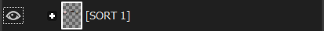
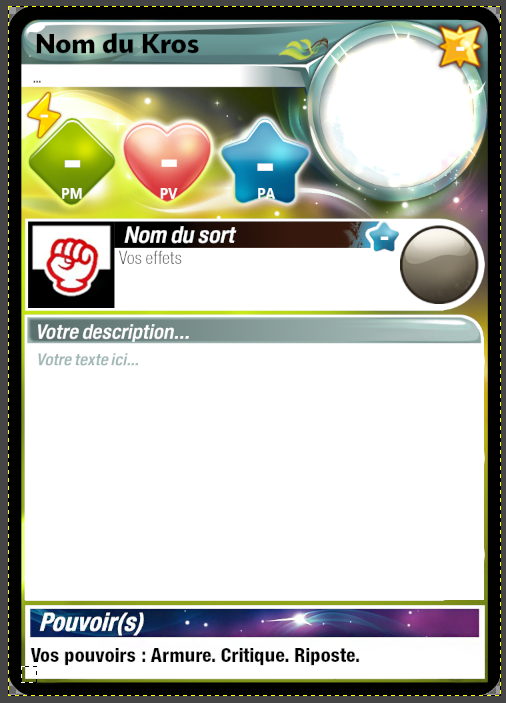
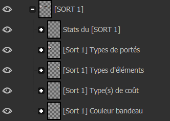
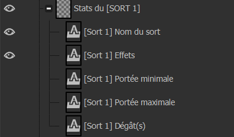
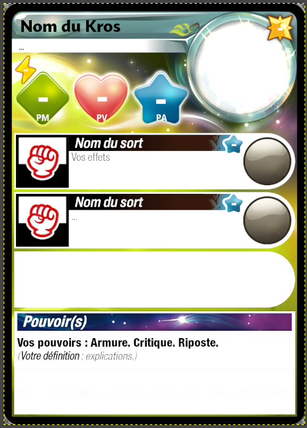
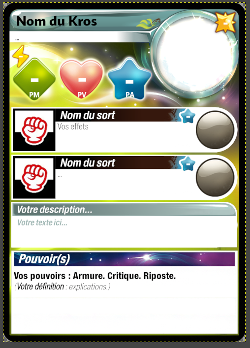

Modifier la carte
Maintenant on va attaquer comment changer l'aspect de la carte !
Comme déjà survolé plus tôt (du moins, si vous suivez le tuto dans l'ordre) la partie calque (sur votre droite normalement)
représente toutes les images et images textes qui compose la carte.
On va d'abord voir comment on peut modifier l'apparance de la carte avec leur visibilité.
1- Calque visible ou non
Dans Gimp c'est très simple, un calque (ou groupe de calques) est visible sur l'image si l'oeil à gauche du calque apparaît.
Dans le cas contraire, le calque est "invisible"

ici vous pouvez voir que le sort N°1 est visible ce qui concorde avec le fait qu'on puisse le voir sur l'image.
Merci capitaine Obvious !
Si vous avez compris ça, vous aller très vite comprendre ce qu'on peut faire avec le logiciel.
Un petit exemple :

La carte de base ne présente qu'un seule sort, si vous souhaitez que votre Krosmaster en possède 4, alors :
- cliquer sur l'oeil du groupe de calques Les descriptions pour faire "disparaître" la description.
- cliquer sur l'emplacement ou devrait se trouver l'oeil des groupes de calques [Sort 2], [Sort 3], [Sort 4] pour les faire apparaître.
Résultat :

En 4 clics, votre carte ressemble à ça :

Á partir de là, vous devriez avoir compris : vous pouvez commencer à tout toucher (n'hésitez pas à revenir en cas de problème).
j'ai un autre exemple un peu plus poussé :
Vous souhaitez sans doute vouloir modifier un sort pas vrai ? Mais faites attention car :
un sort est plutôt complexe et prend en compte beaucoup de parmaètres (calques).
Pour les curieux qui ont essayer d'appuyer sur tous les "+" qui compose les calques d'un sort. vous avez sûrement été pris de vertiges
(ou bien vous vous êtes demandé comment j'ai eu le courage de faire tout ça...)
2- Les sorts
j'ai un autre exemple un peu plus poussé :
Vous souhaitez sans doute vouloir modifier un sort pas vrai ? Mais faites attention car :
un sort est plutôt complexe et prend en compte beaucoup plus de paramètres (calques).
Pour les curieux qui ont essayés d'appuyer sur tous les "+" qui compose les calques d'un sort. vous avez sûrement été pris de vertiges
(ou bien vous vous êtes demandés comment j'ai eu le courage de faire tout ça...). Vous n'avez pas à vous inquièter, on va faire ça étape par étape.
Un sort, ici, le [Sort 1]. Est composé de :
- Ses stats.
- Son type de portée.
- Son type d'élément.
- Son type de coût (PA, PM, etc...).
- La couleur de son bandeau.

C'est pas sorcier jusque là non ?
Je vous consille de toucher à la visibilité de ces groupes de calques pour voir à quoi ils correspondent sur la carte.
Vous voulez changer le type de portée de votre sort ? Ouvrez le groupe de calque [Sort 1] Types de portés

Plutôt facile non ? y a même un code couleur ! Désactivez l'oeil du calque CaC (cela fera disparaître le "poing"),
cliquez sur la portée que vous voulez.
les chiffres de la portée ne sont pas visible ? Ouvrez le groupe de calque Stats du [SORT 1].

Comme c'est étrange ? la portée minimale et maximale ne sont pas visibles ! Réactivez les "yeux" et tout devrait marcher.
3- Déplacer la description
Vous avez peut-être remarqué un problème avec la description de la carte.
En effet si votre Krosmaster possède 2 sort que vous souhaitez une petite description et une case de pouvoir dite "moyenne" :
Vous verrez que la case moyen pouvoir passe sur la case petite description ; pour régler ça, vous devrez déplacer la description à la main.

- Sélectionnez le calque ou groupe de calque que vous voulez déplacer (ici petite description). Conseil N°3
- Cliquez sur l'outil de déplacement.
- Dans les options de cet outil, veuillez cocher la case qui permet au déplacement de déplacer la calque actif (=calque sélectionné).
- Cliquer sur la description (même si vous ne la voyez pas, vous pouvez voir ses contours, sinon, vous pouvez juste désactiver la case des pouvoirs le temps du déplacement).
- Déplacez votre description de manière à ce qu'elle recouvre la case du sort N°3. Conseil N°4

Et je crois qu'on a fini ce chapitre sur comment modifier l'aspect d'une carte
C'était le plus long il me semble...